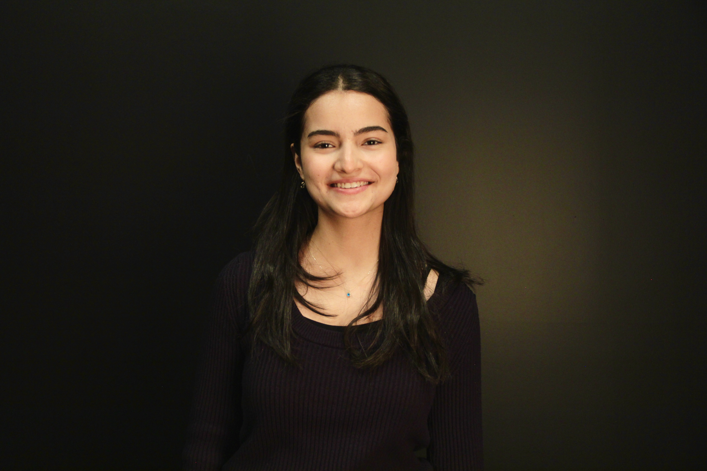

I am a Computer Engineering student interested in software development, research, and social impact. I am currently seeking internship and exchange opportunities where I can grow academically and professionally.